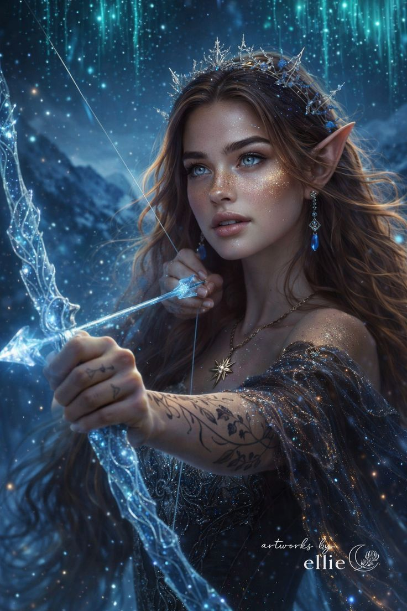
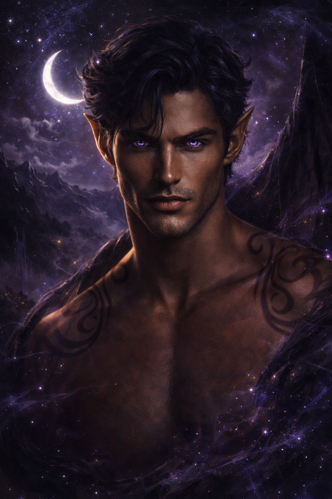

Por las estrellas que escuchan ... y los sueños que se hacen realidad
El personaje principal y protagonista de los 4 primeros libros se llama Feyre, es una humana de ojos azules, la cual durante el primer libro debe de enfrentar diversas pruebas que al final la adentraran aun mas en el mundo de las hadas y la convertiran en un personaje trascendentral con un gran desarrollo.

Habria esperado quinientos años mas por ti. Mil años. Y si este era todo el tiempo que se nos permitia tener..., la espera habria valido la pena
Rhysand es el Alto Lord de la Corte Noche y es conocido como el Alto Lord más poderoso de la historia. A menudo apodado "Rhys", se le describe inicialmente como un personaje arrogante y frío, pero resulta ser profundamente leal y protector, especialmente con su pareja. Tiene ojos violetas caracteristicos porque asemejan el reflejo de estrellas.
